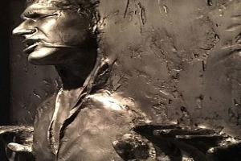
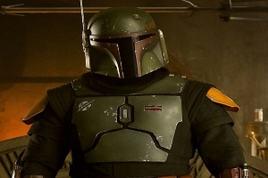
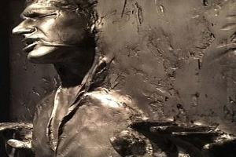
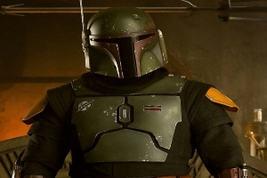

No telefone com Han Solo.
No telefono com o Han Solo de hoje. Nosso apresentador conversa com Jabba de Hult,e pergunta o que aconteceu no MASTERCHEF e o que ele pretende fazer agora, depois da sua eliminação.
Entrando em uma fria.
Han conversa com o Grupo da Cantina e o que levou o grupo a se reunir depois de treze anos sem gravar,fala tambem sobre a perda de Jonas que foi devorado por um Rancor.
Entrevista.
Não perca a entrevista de Boba Fett. Onde conta alguns detalhes sobre seu novo livro, muito criticado pelos especialistas "Eu sou um caçador de recompensas, não sou um escritor!". Desabafa Boba no programa .